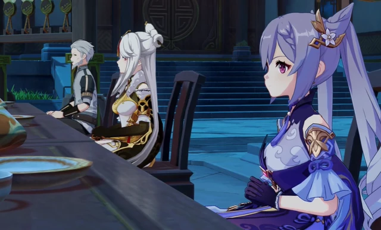

Liyue · Organizations & Factions
The Liyue Qixing
The Liyue Qixing is a seven-seat merchant council that governed civic life under Morax and inherited the Geo Archon’s administrative duties after his voluntary retirement; most members remain unnamed.

Liyue’s Seven-Merchant Council
The Liyue Qixing (Seven Stars of Liyue) is a seven-member council of merchants that governs Liyue’s civilian affairs. Its seats are equal in rank and named for the stars of the Big Dipper, with duties divided by portfolio.
The council formed after the Archon War, when the region’s merchant and artisan families joined to support Liyue’s postwar commerce and civic administration under Morax’s oversight. It predates the modern transfer of power by roughly two millennia; it did not first appear after Rex Lapis’s public death.
Responsibilities and Institutions
The Qixing handles day-to-day governance and works from Yuehai Pavilion. Its responsibilities include law, foreign relations, urban development, and other civic portfolios. The Eight Trades operate major industries under Qixing jurisdiction, while the Millelith and civil offices form part of Liyue’s wider administrative network.
Ningguang is Tianquan, responsible for the inherited law code and amendments as well as foreign relations. Keqing is Yuheng, whose portfolio covers urban management and infrastructure. Ganyu serves as General Secretary to the council as a whole; that role is distinct from holding one of the seven seats.
Morax’s Retirement and Civilian Rule
For centuries the Qixing governed under Morax’s authority while handling Liyue’s commercial and civic work. At the opening of the Liyue Archon Quest, Rex Lapis appears to die during the Rite of Descension. The council then assumes the Geo Archon’s governing duties; the later quest reveals that Morax had chosen to retire, rather than being overthrown by the Qixing.
The transition was possible because the council already had an established administration. The Qixing’s role changed from managing civilian affairs under the Archon to carrying Liyue’s governance without his direct rule.
Known Members and Open Seats
The game names three current seat-holders: Uncle Tian as Tianshu, Ningguang as Tianquan, and Keqing as Yuheng. Ganyu is the long-serving General Secretary, not a fourth Qixing member. The other members and much of their work are not publicly identified in the story, so a complete named roster cannot be supplied from confirmed information.
Keqing’s personal skepticism of Archonic rule should not be presented as the Qixing’s shared doctrine. The council has also worked with the Adepti when Liyue’s needs called for it.
The Qixing in the Current Crisis
During the Hallowing crisis, the Qixing coordinates at home with the Millelith and Adepti, helps contain the initial chaos, and sends people and supplies to distant fronts. Ningguang represents Liyue at the international meetings and describes administration as a group effort rather than her work alone.
This latest account continues the Qixing’s core role: civilian government, practical coordination, and decisions for Liyue’s people. It does not make Ningguang a sole ruler or reveal the identities of the four unnamed seats.
This is an original CoreGG reading guide, not an official HoYoverse article or a reproduction of the game text. Source links below identify the records used so you can check the original context.
Sources & references
Check these sources for the original game text and reference trail.